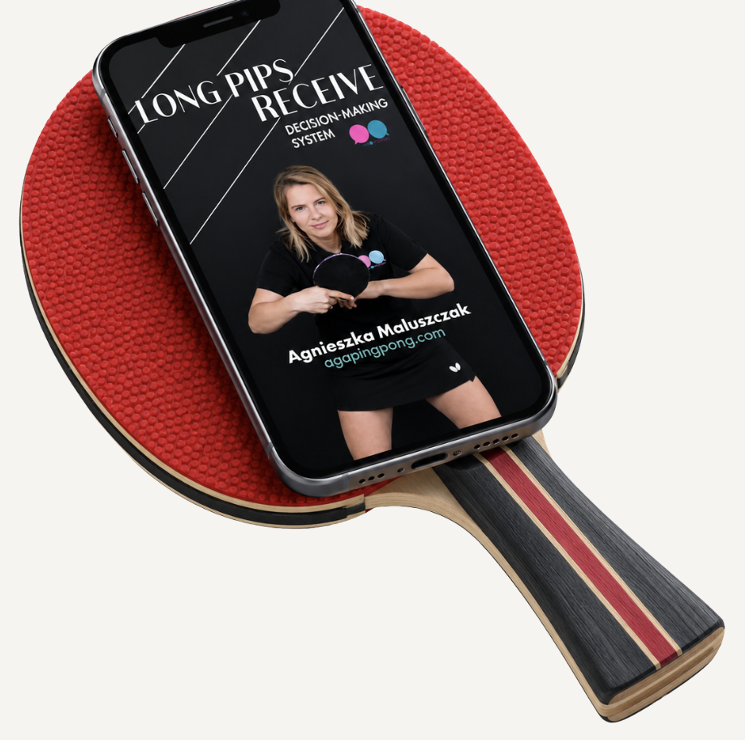

Session Schedule
Click on our homepage PingPongParkinson New York City to find and register for upcoming sessions. The calendar is updated continuously, so be sure to check it regularly. Pre-registration is required. You do not need to bring a paddle or balls to any session. Session fees are $15*
‼️‼️ Note the following schedule changes:
- We are no longer holding sessions on Tuesdays at Ping Pod LES . You are welcome to join us on Tuesdays at the Gertrude Ederle Recreation Center from 12:15 - 2:15 pm
- Due a closure at Spin on Thursday, November 19, we moved the session to Ping Pod LES from 1:30-3:30 pm.
- Spin is also closed on Thanksgiving Day, Thursday, November 26 and we will take the day off ourselves!
- At the request of our Downtown Brooklyn participants (620 Fulton), we will switch the weekly sessions from Wednesdays to Tuesdays 12:00 - 2:00 pm, beginning December 1st.
If you are headed to a Ping Pod venue, here are your door openers:
- LES: Thursday, November 19: LINK
- Dobrow: Wednesdays in November LINK
- W99: Mondays in November:
*There is no fee for our two new sites, Downtown Brooklyn and the Gertrude Ederle Recreation Center in 2026
Lecture Series: Tuesday, December 8th, 5:30 - 6:30 pm
Our next PD lecture will feature Antonia Andrades Schroeder, MS CCC-SLP, Lecturer at the Hunter College Center for Communication Disorders, speaking on "Treating Speech and Voice Issues in Parkinson's".
The venue is the same as before, Northwell Greenwich Village Hospital, 200 West 13th Street, 6th floor, room 643 (large conference room). This is near the corner of 7th Avenue and 13th Street in Manhattan.
The PD Lecture Series is sponsored by Ping Pong Parkinson NYC, in collaboration with members of Luke's Rock Steady Boxing and Dance for PD classes. The lectures are free and open to the public and no registration is necessary. Many thanks to Bill Easterly for leading the Lecture Series program.
No Zoom links or recordings will be available for this lecture.
New E-book from our Coach Aga
Check out the new e-book written by our coach Agnieszka (Aga) Maluszczak entitled Long Pips Receive Mastery: From Reaction to Decision.

The book is written especially for players who use rackets with "long pips," but any player will find important tips. You will learn how to read spin (what to look for before the ball reaches you), available strategies for receiving the first ball, common mistakes players make, and more.
You can order the book for immediate arrival by clicking here. Thinking about Ping Pong Through Dance, and Vice-Versa
Did you see yesterday's New York Times review of the performance at Abrons Art Center Playhouse Theater by the choreographer Cherrie Yu called "Daily Diversions"? Ms. Yu's work explores the shared features and history of ping pong and dance. She has assembled a cast of both ping pong players and dancers, young and old.
Tickets are still available (only $28.50) for the final performance Saturday, November 14th at 7:30 pm.
Click here to order. The theater has accessible seating. I will be there!
Be Safe
Following a few incidents where players have incurred shoulder, wrist, and leg injuries, I'd like to remind everyone about the need to do warm-up exercises before any ping ping session. Please review the 12-minute video provided by the awesome Rock Rock Steady Boxing coach Luke Barrett warm up video for Parkinson's players that you can access on youtube.
Also, don't forget to take these precautions to avoid falls:
- Wear rubber soles, never slippery shoes. And note that not all rubber soles are safe. I learned that one player fell wearing rubber soled "Merrills" that were intended for outdoors use. Look for table tennis or indoor volleyball shoes.
- Be conscious of balls on the floor around you. Look around you before starting a rally and pick up any balls near your feet
- Remember what our coach Suchy has taught us about footwork: When moving side to side, always move the outside foot ; never cross one leg over the other.
- Think carefully before you back up to hit a ball. It is very dangerous to do this if you have balance issues. Most of the injuries I've seen occur when players do this.
- When bending over, bend your knees to lower the center of gravity.
Welcome Newbies!
Click here to see PingPongParkinson New York FAQs. Elevators
Did you know that there is an elevator at Spin and also at Ping Pong LES? If you need an elevator, please call me in advance (516 680 7983) and I will arrange for a manager escort (Spin) or coordinator escort (Ping Pod LES).
Donate
PingPongNYC has achieved 501(c)(3) status—your tax-deductible donations help us bring the joy and health benefits of ping pong to New Yorkers with movement disorders. Please share this good news with your family and friends and encourage them to donate in any of the following ways:
If you wish to be taken off this distribution list, hit reply and let me know.